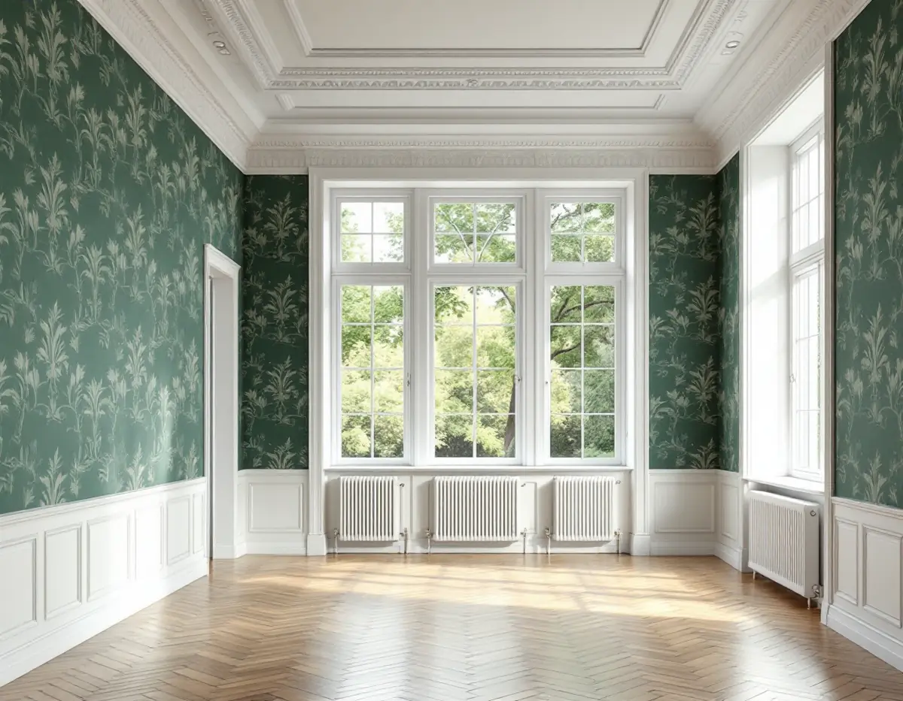
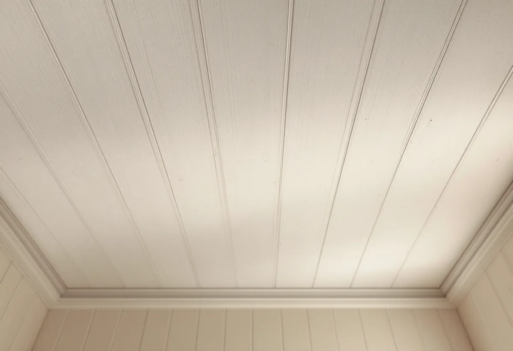

Platsbesök
Vi ser på väggar och tak, vad som sitter under tapeten och hur ljuset faller i rummet.
I en stor villa i Djursholm eller Stocksund kan det gamla innertaket vara av spänd papp och fönstren släppa in mycket ljus. Det påverkar både vilken tapet som håller och hur arbetet läggs upp. Geal Entreprenad AB tapetserar i Danderyds villor och lägenheter och tar hänsyn till husets ålder redan när underlaget och tapeten väljs.

Danderyd har sedan 1987 två större områden av riksintresse för kulturmiljövården, Djursholms villastad och Stocksunds villastad. Kommunens översiktsplan beskriver Djursholm som landets första villastad anlagd som förort, grundad på privat initiativ. Bebyggelsen speglar framför allt perioden 1890–1930, med stora naturtomter och stora villor där stilidealen kan följas från de första enkla trävillorna till nationalromantik, jugend och funktionalism.
Stocksund representerar sekelskiftet och 1900-talets två första decennier. Riksintresset har preciserats i elva värdekärnor, och kommunen arbetar med detaljplaner för de nio som ligger i Djursholm.

I riktlinjerna för kulturhistoriska byggnader och miljöer från 2024 uppmanar kommunen fastighetsägare att ta tidig kontakt för rådgivning när de planerar ändringar på eller inom sin fastighet, och särskilt för byggnader som nämns i kommunens kulturmiljöhandbok. Där finns en kulturmiljökarta, och om fastigheten är utpekad kan du se vilken arkitekturstil huset tillhör.
Riktlinjerna påminner också om att åtgärder ska utföras varsamt och med hänsyn till byggnadens särart även om fastigheten inte har något utpekat skydd, och att ägaren ska hålla byggnaden i vårdat skick. Tapeter nämns inte, men ska ett gammalt papptak eller en bevarad tapet i en representativ hall tas bort kan det vara värt att höra med kommunen först.
Svenska Byggnadsvårdsföreningen beskriver pappspänning av tak som ett hantverk som man knappast kan rekommendera en amatör att göra själv; det hör till yrkesmålarnas område. Skadade papptak är ofta mycket svåra att reparera. Är skadan begränsad till ett hörn skärs hörnpappen upp på tre sidor, pappen runt skadan fuktas i ungefär en halvtimme och ny papp spänns över. Under hela arbetet behövs stödjande brädor, eftersom papptakets tyngd annars får det att rasa ned. Ett mer skadat tak måste spännas om helt.
Har den yttersta våden släppt längs väggen ska sprickan inte fyllas med latexfog, skriver föreningen. Pappen spikas fast, en torr remsa läggs över spikarna och en klisterremsa över alltihop. Ska gammal limfärg tvättas bort inför ommålning provar man först om taket är grundat, eftersom klisterremsorna annars kan lösas upp. Därefter grundas taket med en mager oljefärg innan det målas med limfärg.
Ljus bleker tapeter, och hur fort beror på materialet. Byggnadsvårdsföreningen förklarar att ljusäkthet anges på den så kallade Ullskalan från 1 till 8. Moderna tapeter förväntas ligga över 6, medan papperet i sig har en låg uv-resistens på 2–3. Pigmenten åldras också olika: grön kromoxid och ultramarinblått hör till de mest motståndskraftiga, medan gula, bruna och röda ockror och umbror är sämre.
Vill du ha en vävtapet i en matsal eller ett bibliotek är kravet på underlaget detsamma som vid målning eller vanlig tapetsering, skriver föreningen: det ska vara slätt och fast. Gäller frågan fasadens tidstypiska färgsättning finns det mer under målare i Danderyd.
Vi ser på väggar och tak, vad som sitter under tapeten och hur ljuset faller i rummet.
Du tar fram vad kommunens kulturmiljökarta säger om fastigheten, om det finns något.
Väggar, tak och underarbete redovisas var för sig.
Golv, snickerier och fast inredning täcks innan arbetet börjar.
Papp fästs eller lagas, väggarna lagas och förlimmas.
Tapeten sätts upp med passning av mönstret, och överbliven tapet lämnas för lagningar.
Skatteverket räknar tapetsering som rotarbete i småhus, bostadsrätt och ägarlägenhet, och även att måla tak och väggar ger avdrag.
Avdraget är 30 procent av arbetskostnaden, högst 50 000 kr per person och år och högst 75 000 kr tillsammans med rutavdrag. Material som tapet, papp och klister ger inget avdrag, och inte heller resor. Geal drar avdraget direkt på fakturan.
Takhöjden, om papp i tak eller väggar behöver lagas och hur krävande tapeten är att sätta upp påverkar mest. Efter ett gratis platsbesök får du ett skriftligt kostnadsförslag.
Fasad, fönster och invändig målning.
Målare i Stockholm →Takbyte, takbesiktning och plåtarbeten.
Takläggare i Danderyd →Djursholm, Stocksund och Enebyberg.
Takrenovering i Danderyd →Villastäder, lovplikt och strandskydd.
Attefallshus i Danderyd →Tillbyggnad, tomt och kommunens riktlinjer.
Byggföretag i Danderyd →Kalkfärg på puts, linoljefärg på trä.
Fasadmålning i Danderyd →Villastäder, egnahem och grupphus i Danderyd.
Fasadrenovering i Danderyd →Lovplikt, klassning och spröjs i Danderyd.
Fönsterbyte i Danderyd →Varsamt underhåll av villafönster i Djursholm.
Fönsterrenovering i Danderyd →Originalgolv i villor från 1890-talet och framåt.
Golvläggare i Danderyd →Slipa parkett och mönstergolv i villan.
Golvslipning i Danderyd →Rännor, stuprör och beslag i Danderyd.
Plåtslagare i Danderyd →Villastaden, takmaterial och solceller.
Takbyte i Danderyd →Villastäder, ritningar och ventilation.
Badrumsrenovering i Danderyd →Villastäder, egnahem och kommunens regler.
Köksrenovering i Danderyd →Villor, egnahem och grupphus i Danderyd.
Målare i Danderyd →Altaner, staket och carport.
Snickare i Danderyd →Funkis, grupphus och 1950-talsvillor.
Tillbyggnad i Danderyd →Riva varsamt, bygga om helt.
Totalrenovering i Danderyd →